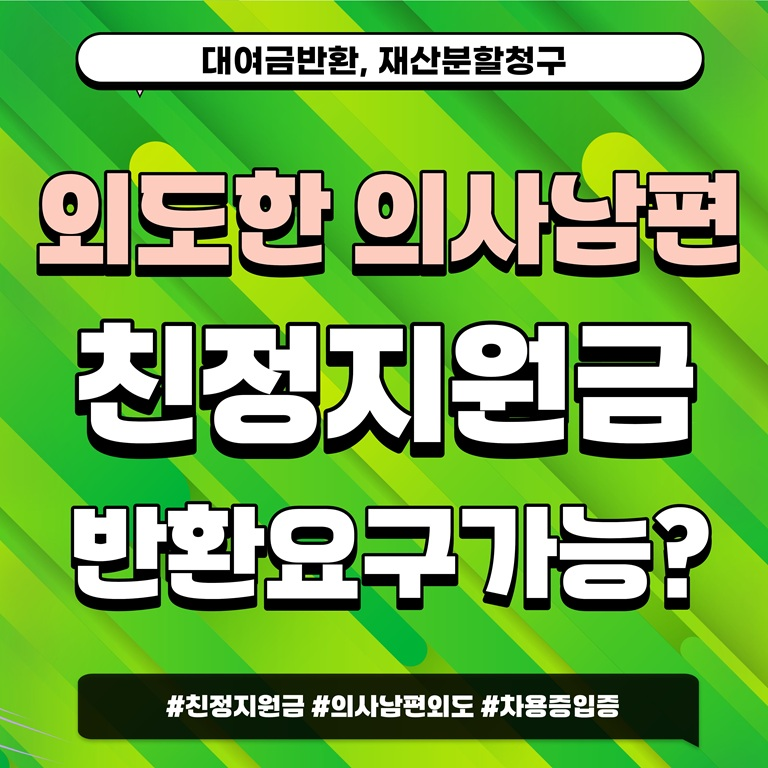

오늘은 친정에서 거액을 지원해 남편을 의사로 만들었는데 외도로 이혼하게 된 경우, 지원금을 돌려받을 수 있는지와 재산분할 방법에 대해 알아보겠습니다.
피부과 의사인 남편을 가난한 의대생 시절부터 만나 헌신적으로 내조하며 20대와 30대를 보낸 한 여성의 이야기입니다. 성공한 사업가인 친정아버지는 "집안에 의사 사위 하나 두는 게 소원"이라며 지원을 아끼지 않으셨어요. 시댁 형편이 어려워 생활비를 내주셨고, 남편이 개원할 땐 10억 원을 무이자로 빌려주셨으며, 서울의 번듯한 아파트 전세금 10억 원도 선뜻 내주셨습니다.
그런데 얼마 전부터 남편이 사소한 일에도 짜증을 내고 부부관계도 피하더니, 퇴근시간쯤 병원에 찾아갔다가 젊은 간호사와 손을 잡고 나오는 모습을 목격했어요. 남편은 처음엔 부인하다가 결국 관계를 인정하면서 "처가의 간섭이 너무 심해 숨 쉴 곳이 필요했다"고 말했습니다.
친정 지원금의 증여와 대여 구분
이 사연에 따르면, 친정 부모님으로 부터 적지 않은 경제적인 지원을 받았습니다. 아파트 전세금은 그대로 돌려받기 어렵고, 병원 개원자금은 이 돈을 증여한 것으로 보느냐, 대여한 것으로 보느냐에 따라 달라집니다.
돈을 대여한 것으로 보려면 차용증이 있거나 이자를 지급한 내역 등의 증거가 있어야 하는데, 무이자로 빌려준 돈이라 이자 지급 내역은 없을 것이고 결국 차용증이 존재하는지가 핵심이 돼요. 차용증이 존재하지 않는다면 대여금으로 인정받기는 어려울 수 있습니다.
가족 간에 돈을 주고받으면서 차용증을 꼼꼼히 쓰는 경우가 드물기 때문에, 차용증이 없다면 돈을 빌려줄 때 나눈 대화가 남아 있는지 확인해야 합니다.
재산분할 비율 산정 시 유리한 요소
병원 개원 자금 지원을 대여로 볼 수 없다면 이 돈은 재산분할로 정리가 될 가능성이 높습니다. 아파트 전세금과 병원 자금으로 지원한 돈이 무려 20억 원인데, 여기에 남편이 의사가 되기까지 오랜 기간 내조한 부분, 이 기간에도 친정의 지원이 있었다는 것은 재산분할 비율을 정할 때 굉장히 유리하게 참작될 가능성이 높아요.
반려동물의 법적 지위와 소유권
안타깝지만 법원에 반려동물에 대한 면접교섭을 신청할 수는 없습니다. 강아지를 오랜 시간 자식같이 아끼면서 키워왔지만, 법적으로 강아지는 물건에 해당해요. 따라서 강아지는 양육권이나 면접교섭의 대상이 아닌 소유권의 대상이 되는 것입니다.
SNS 게시와 명예훼손 위험
SNS에 남편의 부정행위 사진을 게시하는 것은 범죄에 해당할 수 있습니다. 구체적으로는 정보통신망법상의 명예훼손죄가 성립되는데, 만약 SNS에 사진을 게시하면서 구체적인 내용도 작성했는데 여기에 허위사실이 포함되어 있다면 처벌의 강도가 더 높아질 수 있어요.
핵심 정리
- 친정에서 지원한 개원 자금과 전세금은 증여인지 대여인지에 따라 판단이 달라지며, 차용증이나 대화 기록 등 입증 자료가 필요합니다
- 오랜 내조와 친정의 경제적 지원은 재산분할 비율을 정할 때 유리하게 고려될 수 있습니다
- 반려동물은 법적으로 재산에 해당하므로 면접교섭 대상이 아니라 소유권 문제로 판단됩니다
- 배우자의 부정행위 사진을 SNS에 게시할 경우 명예훼손 등 형사 문제로 이어질 수 있습니다
보다 자세한 사연은 YTN 라디오 조인섭변호사의 상담소에서 확인해보실 수 있어요